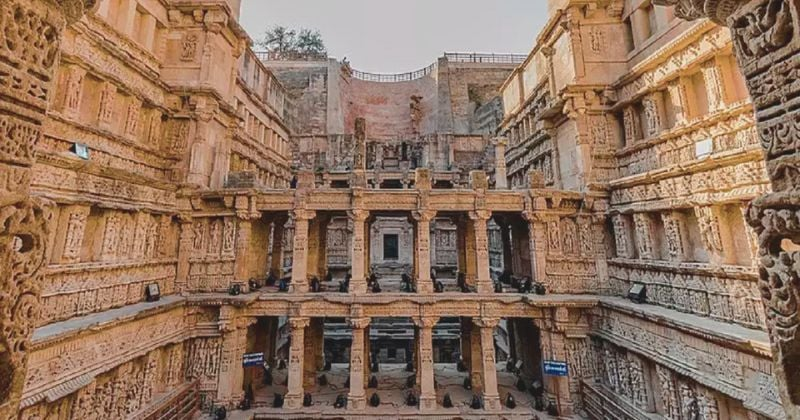
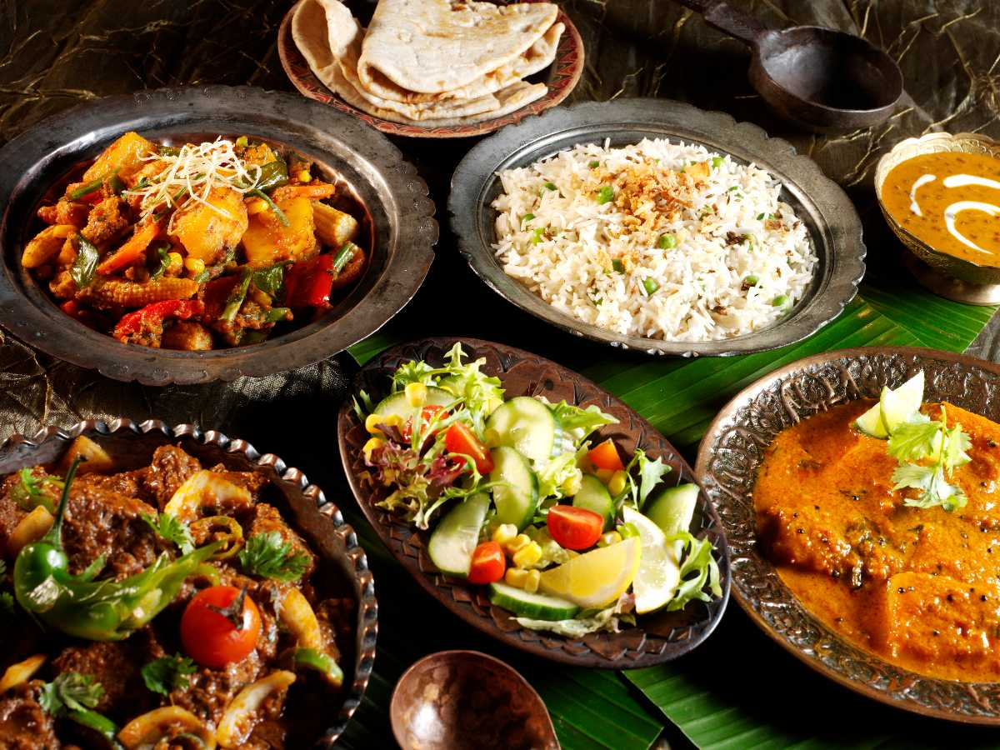
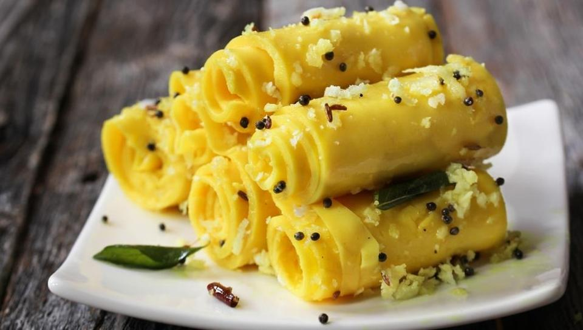
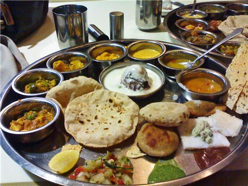

PATAN
- RANI KI VAV
- RUDRA MAHALAYA

INFORMATION
| PLACE |
TIMINGS |
BEST TIME TO VISIT |
| RANI KI VAV |
10.00AM-8.00PM |
IN SUMMERS |
| RUDRA MAHALAYA |
11.00AM-9.00PM |
ANY TIME |
ABOUT PATAN
Home to the UNESCO World Heritage Site of Rani-ki-vav, an exquisite stepwell,
Patan has many legendary monuments to its credit. The city also holds dear its various
Hindu and Jain temples and mosques,which boast some of the finest architectural styles
of their time.
What is the old name of Patan city?
Patan, an ancient fortified city, was founded in 745 AD by Vanraj Chavda,
the most prominent king of the Chavda Kingdom. He named the city “Anhilpur Patan”
or “Anhilwad Patan”after his close friend and Prime Minister Anhil GadariyaApart from
local Gujarati snacks like Thepla, Dhokla, Bhajiyo, Khandvi, Pani puri, there are a lot of dishes
which serve as the staple diet of the state.
Gujarati menu has a huge list of options in extreme variety.Location.



NEXT
BACK